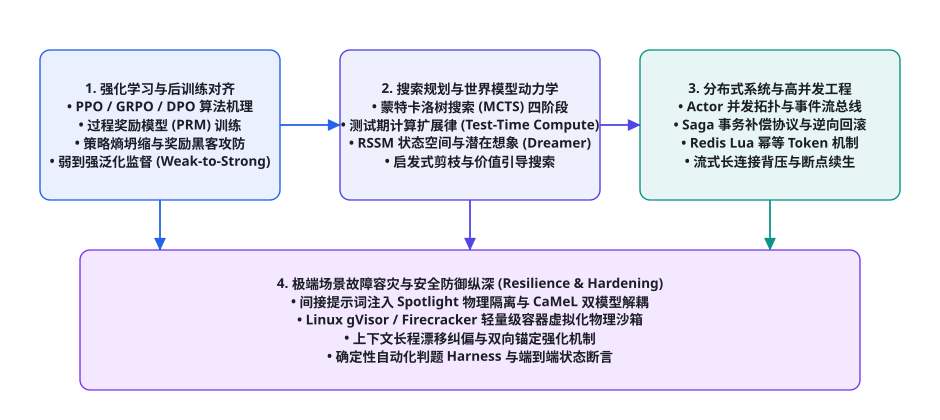
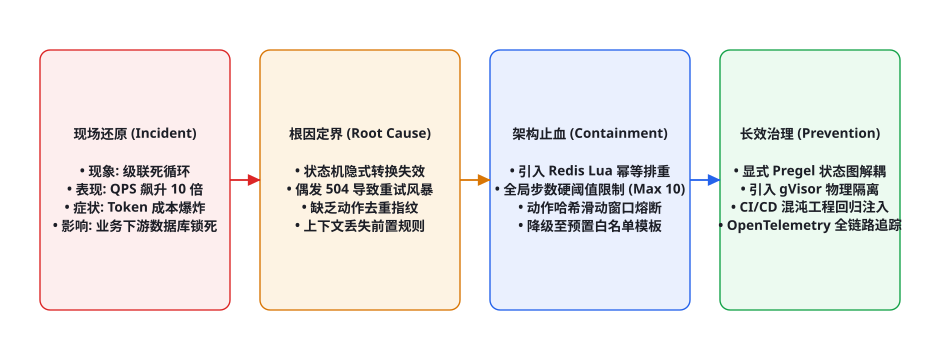

<!DOCTYPE html>
<html lang="zh-CN">
<head>
<meta charset="UTF-8">
<meta name="viewport" content="width=device-width, initial-scale=1.0">
<title>第 111 章 · Agent 工程师面试题库：进阶 50 题精解 — AI Agent Cookbook</title>
<link rel="stylesheet" href="../assets/css/style.css">
</head>
<body>
<div id="progress"></div>

<aside class="sidebar">
  <div class="sidebar-head">
    <a class="logo-row" href="../index.html">
      <span class="logo-mark">AC</span>
      <span class="t">AI Agent Cookbook<span class="s">从入门到精通的智能体全景手册</span></span>
    </a>
    <div class="search-wrap">
      <span class="icon">🔍</span>
      <input id="searchInput" type="text" placeholder="搜索全书…" autocomplete="off">
      <kbd>/</kbd>
      <div id="searchResults" class="search-results"></div>
    </div>
  </div>
  <div class="toc-part"><div class="toc-part-head"><span class="num">0</span>导论<span class="chev">▶</span></div><div class="toc-part-body"><a href="chapters/ch001.html"><span class="cn">001</span>前言：为什么是 Agent，为什么是现在</a><a href="chapters/ch002.html"><span class="cn">002</span>如何使用本书：三条学习路径与阅读指南</a><a href="chapters/ch003.html"><span class="cn">003</span>Agent 通识：定义、心智模型与七十年简史</a></div></div><div class="toc-part"><div class="toc-part-head"><span class="num">1</span>基础篇：LLM 与提示工程<span class="chev">▶</span></div><div class="toc-part-body"><a href="chapters/ch004.html"><span class="cn">004</span>LLM 工作原理速成：Transformer 与注意力机制</a><a href="chapters/ch005.html"><span class="cn">005</span>Token、上下文窗口与采样策略</a><a href="chapters/ch006.html"><span class="cn">006</span>Prompt Engineering 系统指南</a><a href="chapters/ch007.html"><span class="cn">007</span>提示工程进阶：提示链、自洽性与元提示</a><a href="chapters/ch008.html"><span class="cn">008</span>结构化输出：JSON Mode、Schema 与受约束解码</a><a href="chapters/ch009.html"><span class="cn">009</span>LLM 的能力边界：幻觉、知识与推理局限</a><a href="chapters/ch010.html"><span class="cn">010</span>Embedding 与向量空间基础</a><a href="chapters/ch011.html"><span class="cn">011</span>开发环境与 SDK 速览：OpenAI / Anthropic / 开源模型</a><a href="chapters/ch012.html"><span class="cn">012</span>API 工程实践：重试、限流、成本与流式</a><a href="chapters/ch013.html"><span class="cn">013</span>评测思维入门：科学地度量 LLM 输出</a></div></div><div class="toc-part"><div class="toc-part-head"><span class="num">2</span>核心机制篇<span class="chev">▶</span></div><div class="toc-part-body"><a href="chapters/ch014.html"><span class="cn">014</span>什么是 Agent：自主性光谱与感知-决策-行动</a><a href="chapters/ch015.html"><span class="cn">015</span>Agent Loop：大模型 Agent 的心脏</a><a href="chapters/ch016.html"><span class="cn">016</span>ReAct：推理与行动的交织范式</a><a href="chapters/ch017.html"><span class="cn">017</span>工具调用全景：从 Function Calling 到并行编排</a><a href="chapters/ch018.html"><span class="cn">018</span>规划机制：任务分解、Plan-and-Execute 与树搜索</a><a href="chapters/ch019.html"><span class="cn">019</span>记忆系统：短期、长期、情景与语义</a><a href="chapters/ch020.html"><span class="cn">020</span>RAG 从入门到进阶：分块、索引、检索与重排</a><a href="chapters/ch021.html"><span class="cn">021</span>RAG 进阶：HyDE、Self-RAG、GraphRAG 与 Agentic RAG</a><a href="chapters/ch022.html"><span class="cn">022</span>反思与自我改进：Reflexion、Self-Refine 与 Critic 模式</a><a href="chapters/ch023.html"><span class="cn">023</span>上下文工程：Context Engineering 的艺术</a><a href="chapters/ch024.html"><span class="cn">024</span>多 Agent 系统：拓扑、协作协议与角色分工</a><a href="chapters/ch025.html"><span class="cn">025</span>人机协同：审批、中断与恢复</a></div></div><div class="toc-part"><div class="toc-part-head"><span class="num">3</span>工程与框架篇<span class="chev">▶</span></div><div class="toc-part-body"><a href="chapters/ch026.html"><span class="cn">026</span>Agent 技术栈总览与选型决策树</a><a href="chapters/ch027.html"><span class="cn">027</span>从零手写最小 Agent：200 行 Python 的完整实现</a><a href="chapters/ch028.html"><span class="cn">028</span>LangChain 与 LangGraph 深度实战</a><a href="chapters/ch029.html"><span class="cn">029</span>OpenAI Agents SDK 与 Responses API</a><a href="chapters/ch030.html"><span class="cn">030</span>Claude Agent SDK 与 Claude Code 剖析</a><a href="chapters/ch031.html"><span class="cn">031</span>AutoGen / AG2：群聊式多智能体框架</a><a href="chapters/ch032.html"><span class="cn">032</span>CrewAI：角色驱动的多 Agent 团队</a><a href="chapters/ch033.html"><span class="cn">033</span>MetaGPT：软件公司隐喻与 SOP 多智能体</a><a href="chapters/ch034.html"><span class="cn">034</span>LlamaIndex：数据框架与 Agent 融合</a><a href="chapters/ch035.html"><span class="cn">035</span>低代码平台：Dify、Coze、n8n 与 Flowise</a><a href="chapters/ch036.html"><span class="cn">036</span>MCP：Model Context Protocol 详解与生态</a><a href="chapters/ch037.html"><span class="cn">037</span>Agent 互操作协议：A2A、AG-UI 与开放生态</a></div></div><div class="toc-part"><div class="toc-part-head"><span class="num">4</span>训练与强化篇<span class="chev">▶</span></div><div class="toc-part-body"><a href="chapters/ch038.html"><span class="cn">038</span>训练全景图：预训练 → SFT → RLHF → Agent 训练</a><a href="chapters/ch039.html"><span class="cn">039</span>SFT 指令微调实操：数据构建与 LoRA/QLoRA</a><a href="chapters/ch040.html"><span class="cn">040</span>RLHF 与 PPO：三阶段详解</a><a href="chapters/ch041.html"><span class="cn">041</span>DPO 及变体：IPO、KTO、SimPO、ORPO</a><a href="chapters/ch042.html"><span class="cn">042</span>RLAIF、Constitutional AI 与自我奖励</a><a href="chapters/ch043.html"><span class="cn">043</span>RLVR：可验证奖励的强化学习与推理范式</a><a href="chapters/ch044.html"><span class="cn">044</span>工具使用训练：Toolformer、Gorilla 与 ToolRL</a><a href="chapters/ch045.html"><span class="cn">045</span>Agent RL：WebRL、AgentGym、AgentTuning 与进化式训练</a><a href="chapters/ch046.html"><span class="cn">046</span>过程奖励与结果奖励：PRM、ORM 与奖励设计</a><a href="chapters/ch047.html"><span class="cn">047</span>合成数据工程：Self-Instruct、Evol-Instruct 与数据飞轮</a><a href="chapters/ch048.html"><span class="cn">048</span>蒸馏与小型化：让小模型拥有 Agentic 能力</a><a href="chapters/ch049.html"><span class="cn">049</span>Self-Play 与持续学习：Agent 的自我进化</a></div></div><div class="toc-part"><div class="toc-part-head"><span class="num">5</span>评测基准篇<span class="chev">▶</span></div><div class="toc-part-body"><a href="chapters/ch050.html"><span class="cn">050</span>Agent 评测方法论：静态到动态、过程到结果</a><a href="chapters/ch051.html"><span class="cn">051</span>代码 Agent 基准：SWE-bench 家族与 LiveCodeBench</a><a href="chapters/ch052.html"><span class="cn">052</span>Web 与 Computer-Use 基准：WebArena、OSWorld、Mind2Web</a><a href="chapters/ch053.html"><span class="cn">053</span>通用 Agent 基准：GAIA、AgentBench、τ-bench 与 BrowseComp</a><a href="chapters/ch054.html"><span class="cn">054</span>工具调用评测：BFCL、ToolSandbox 与 StableToolBench</a><a href="chapters/ch055.html"><span class="cn">055</span>安全评测：注入攻击基准与自动化红队</a><a href="chapters/ch056.html"><span class="cn">056</span>构建你自己的评测：沙箱、容器化与 CI 集成</a><a href="chapters/ch057.html"><span class="cn">057</span>LLM-as-Judge 与评测的可信度</a></div></div><div class="toc-part"><div class="toc-part-head"><span class="num">6</span>安全与对齐篇<span class="chev">▶</span></div><div class="toc-part-body"><a href="chapters/ch058.html"><span class="cn">058</span>Agent 威胁模型：攻击面全景</a><a href="chapters/ch059.html"><span class="cn">059</span>Prompt Injection 攻防：直接注入、间接注入与防线</a><a href="chapters/ch060.html"><span class="cn">060</span>权限与沙箱：最小权限、能力模型与执行隔离</a><a href="chapters/ch061.html"><span class="cn">061</span>数据外泄与供应链安全</a><a href="chapters/ch062.html"><span class="cn">062</span>越狱与滥用防治</a><a href="chapters/ch063.html"><span class="cn">063</span>幻觉治理与事实性工程</a><a href="chapters/ch064.html"><span class="cn">064</span>对齐与价值观：从 RLHF 到宪政 AI 的落地</a><a href="chapters/ch065.html"><span class="cn">065</span>治理、合规与责任：AI Act 时代的 Agent 运营</a></div></div><div class="toc-part"><div class="toc-part-head"><span class="num">7</span>多模态与具身篇<span class="chev">▶</span></div><div class="toc-part-body"><a href="chapters/ch066.html"><span class="cn">066</span>视觉语言模型与多模态 Agent 基础</a><a href="chapters/ch067.html"><span class="cn">067</span>GUI Agent：从 WebVoyager 到 Computer Use</a><a href="chapters/ch068.html"><span class="cn">068</span>移动与操作系统 Agent：AppAgent 与 OS-Copilot</a><a href="chapters/ch069.html"><span class="cn">069</span>具身智能导览：RT-2、PaLM-E 与 VLA 模型</a><a href="chapters/ch070.html"><span class="cn">070</span>游戏与仿真 Agent：MineDojo、Voyager 与 Genie</a><a href="chapters/ch071.html"><span class="cn">071</span>科学发现 Agent：Coscientist、ChemCrow 与 AI Scientist</a><a href="chapters/ch072.html"><span class="cn">072</span>语音 Agent 与实时多模态交互</a></div></div><div class="toc-part"><div class="toc-part-head"><span class="num">8</span>前沿专题篇<span class="chev">▶</span></div><div class="toc-part-body"><a href="chapters/ch073.html"><span class="cn">073</span>Deep Research：深度研究 Agent 架构解密</a><a href="chapters/ch074.html"><span class="cn">074</span>Coding Agent：从 Copilot 到 Devin 再到 Claude Code</a><a href="chapters/ch075.html"><span class="cn">075</span>Computer Use 与 Browser Use 前沿</a><a href="chapters/ch076.html"><span class="cn">076</span>长时程 Agent：小时级任务、压缩与 Checkpointing</a><a href="chapters/ch077.html"><span class="cn">077</span>World Models：Agent 的世界理解与想象</a><a href="chapters/ch078.html"><span class="cn">078</span>Agent 经济学：成本、延迟与质量的权衡</a><a href="chapters/ch079.html"><span class="cn">079</span>可观测性：Tracing、Eval 与监控</a><a href="chapters/ch080.html"><span class="cn">080</span>Agent 系统规模化：队列、并发与可靠性</a></div></div><div class="toc-part"><div class="toc-part-head"><span class="num">9</span>实战项目篇<span class="chev">▶</span></div><div class="toc-part-body"><a href="chapters/ch081.html"><span class="cn">081</span>项目 1：个人知识库问答 Agent（RAG 全流程）</a><a href="chapters/ch082.html"><span class="cn">082</span>项目 2：自动化数据分析师 Agent</a><a href="chapters/ch083.html"><span class="cn">083</span>项目 3：复刻 Deep Research 研究助手</a><a href="chapters/ch084.html"><span class="cn">084</span>项目 4：浏览器自动化 Agent</a><a href="chapters/ch085.html"><span class="cn">085</span>项目 5：代码审查与修复 Agent</a><a href="chapters/ch086.html"><span class="cn">086</span>项目 6：多 Agent 内容工厂</a><a href="chapters/ch087.html"><span class="cn">087</span>项目 7：客服工单 Agent（含人工升级）</a><a href="chapters/ch088.html"><span class="cn">088</span>项目 8：本地化 Agent（Ollama + 端侧模型）</a><a href="chapters/ch089.html"><span class="cn">089</span>生产化：部署、网关、缓存与成本控制</a><a href="chapters/ch090.html"><span class="cn">090</span>案例研究：Devin、Manus、Claude Code 与 Cursor 拆解</a></div></div><div class="toc-part"><div class="toc-part-head"><span class="num">10</span>理论基础篇<span class="chev">▶</span></div><div class="toc-part-body"><a href="chapters/ch091.html"><span class="cn">091</span>形式化基础：MDP、POMDP 与 Agent 数学语言</a><a href="chapters/ch092.html"><span class="cn">092</span>LLM 作为策略：In-context RL 与序列建模视角</a><a href="chapters/ch093.html"><span class="cn">093</span>搜索算法：从 BFS/A* 到 MCTS 与 LLM 结合</a><a href="chapters/ch094.html"><span class="cn">094</span>规划理论：经典规划、HTN 与 LLM+P</a><a href="chapters/ch095.html"><span class="cn">095</span>经典 Agent 理论：BDI、Soar、ACT-R 的遗产</a><a href="chapters/ch096.html"><span class="cn">096</span>概率与决策：贝叶斯视角与多臂老虎机</a><a href="chapters/ch097.html"><span class="cn">097</span>世界模型与生成式仿真</a><a href="chapters/ch098.html"><span class="cn">098</span>涌现、Scaling Laws 与 Agent 的未来能力</a></div></div><div class="toc-part"><div class="toc-part-head"><span class="num">11</span>论文库篇<span class="chev">▶</span></div><div class="toc-part-body"><a href="chapters/ch099.html"><span class="cn">099</span>论文阅读方法论：如何高效读 Agent 论文</a><a href="chapters/ch100.html"><span class="cn">100</span>奠基论文精读十篇</a><a href="chapters/ch101.html"><span class="cn">101</span>核心机制论文地图：记忆、RAG、规划与多智能体</a><a href="chapters/ch102.html"><span class="cn">102</span>训练与强化论文地图</a><a href="chapters/ch103.html"><span class="cn">103</span>评测与安全论文地图</a><a href="chapters/ch104.html"><span class="cn">104</span>2024-2026 前沿论文追踪清单（100 篇）</a></div></div><div class="toc-part"><div class="toc-part-head"><span class="num">12</span>项目与资源库篇<span class="chev">▶</span></div><div class="toc-part-body"><a href="chapters/ch105.html"><span class="cn">105</span>开源框架横评与选型决策树</a><a href="chapters/ch106.html"><span class="cn">106</span>50 个值得 Star 的开源 Agent 项目</a><a href="chapters/ch107.html"><span class="cn">107</span>数据集与基准资源大全</a><a href="chapters/ch108.html"><span class="cn">108</span>学习资源：课程、书籍、博客与社区</a><a href="chapters/ch109.html"><span class="cn">109</span>从本书到 GitHub：贡献指南与扩展路线</a></div></div><div class="toc-part"><div class="toc-part-head"><span class="num">13</span>面试与速查篇<span class="chev">▶</span></div><div class="toc-part-body"><a href="chapters/ch110.html"><span class="cn">110</span>Agent 工程师面试题库：基础 50 题精解</a><a href="chapters/ch111.html"><span class="cn">111</span>Agent 工程师面试题库：进阶 50 题精解</a><a href="chapters/ch112.html"><span class="cn">112</span>系统设计面试：设计 Deep Research / Coding Agent</a><a href="chapters/ch113.html"><span class="cn">113</span>术语表：300 条 Agent 核心术语速查</a></div></div>
  <div class="sidebar-foot">
    <span>v1.0 · 开源书籍</span>
    <button class="theme-toggle">🌙 深色</button>
  </div>
</aside>
<div class="scrim"></div>

<div class="topbar">
  <button class="menu-btn">☰</button>
  <span class="title">AI Agent Cookbook</span>
</div>

<main class="main">
  <div class="content">

    <nav class="crumb">
      <a href="../index.html">首页</a><span class="sep">/</span>
      <a href="../index.html#part-13">第十三部分 · 面试与速查篇</a><span class="sep">/</span>
      <span>第 111 章</span>
    </nav>

    <header class="chapter-header">
      <div class="chapter-meta">
        <span class="badge lv-高级">高级</span>
        <span class="badge tag">技术面试</span>
        <span class="badge tag">系统架构</span>
        <span class="badge tag">强化学习</span>
        <span class="badge">⏱ 约 85 分钟</span>
      </div>
      <h1>第 111 章 · Agent 工程师面试题库：进阶 50 题精解</h1>
      <p class="lead">如果说基础面试题考查的是工程师对工具调用、提示词语法与状态流转等显性工程细节的掌握，那么进阶面试题则是对资深架构师与算法研究员「底层数学直觉、强化学习对齐演进、世界模型动力学预测、大规模分布式系统事务治理以及极端攻防混沌工程」的全面升维大考。面对硅谷顶级 AI 实验室与国内头部大厂高阶技术评审（如资深架构师、技术总监及技术 VP 轮次），考生必须跳脱出单纯的“调库式代码编写”，站在第一性原理的高度深刻洞悉概率测度、隐马尔可夫决策过程（POMDP）、测试期计算扩展律（Test-Time Compute）与分布式共识的本质交汇。本章精选 50 道高难度进阶面试真题，以最高标准的工业级深度与严谨数学论证，为你拆解高阶面试的胜负手。</p>
    </header>

    <div class="callout note">
      <div class="co-title">💡 进阶技术答辩的破局法则：从“如何实现”跃迁至“架构权衡与理论边界”</div>
      <p>在高阶技术答辩中，面试官抛出的问题往往看似简短，实则内含深刻的系统张力。例如“如何防止智能体在长思维链中陷入奖励黑客（Reward Hacking）？”这绝非在提示词里多加一行约束就能解决的浅层问题，而是直指强化学习目标函数设计、KL 散度惩罚系数动态调整、以及过程奖励模型（PRM）监督噪声的理论极限。高级答辩的黄金法则是：<strong>先立足形式化数学表述，再映射至分布式工程妥协，最后给出可度量的生产熔断与治理闭环</strong>。</p>
    </div>

    <figure class="figure">
      
      <figcaption><span class="fig-no">图 111-1</span> 智能体高级工程面试四大核心考查支柱 (Agent Advanced Interview Pillars)</figcaption>
    </figure>

    <h2 id="rl-and-post-training-depth">模块一：强化学习、后训练对齐与过程奖励机制（Q51 - Q60）</h2>

    <h3>Q51: 详细对比 PPO、DPO 与 GRPO 在智能体后训练（Post-Training）中的数学机制与工程优劣。</h3>
    <p><strong>【核心考点】</strong>策略梯度、隐式奖励函数、参考模型内存开销、Group Relative Advantage 优势估计。</p>
    <p><strong>【参考回答】</strong>这三者代表了大模型强化学习对齐的演进脉络：
    <ul>
      <li><strong>PPO（Proximal Policy Optimization）</strong>：经典的在线（On-policy）Actor-Critic 架构。维护四个网络（Actor, Critic, Reference, Reward）。通过重要性采样比率裁剪限制策略更新幅度：
      $$L^{CLIP}(	heta) = \hat{\mathbb{E}}_t \left[ \min(r_t(	heta)\hat{A}_t, \, 	ext{clip}(r_t(	heta), 1-\epsilon, 1+\epsilon)\hat{A}_t) 
ight]$$
      <strong>优劣</strong>：理论严密，支持多步环境探索；但工程复杂度极高，显存占用极大（需常驻 4 个庞大模型），训练易受 Critic 价值网络估计误差影响而震荡发散。</li>
      <li><strong>DPO（Direct Preference Optimization）</strong>：将奖励模型通过 Bradley-Terry 偏好模型解析反解为关于策略概率的比值，消除了显式的奖励模型与 Critic 网络：
      $$L_{DPO}(	heta) = -\mathbb{E}_{(x, y_w, y_l)} \left[ \log \sigma \left( eta \log rac{\pi_	heta(y_w \mid x)}{\pi_{ref}(y_w \mid x)} - eta \log rac{\pi_	heta(y_l \mid x)}{\pi_{ref}(y_l \mid x)} 
ight) 
ight]$$
      <strong>优劣</strong>：纯离线（Off-policy）交叉熵损失，训练极其稳定省显存；但缺乏对未见过样本的在线探索能力，对于需要自主多步规划与动态环境试错的 Agent 场景，容易产生分布外过拟合。</li>
      <li><strong>GRPO（Group Relative Policy Optimization）</strong>：DeepSeek-Math/R1 所采纳的无 Critic 强化学习架构。针对同一个问题输入 $x$ 采样生成一组候选输出 $\{y_1, y_2, \dots, y_G\}$，直接利用该组输出的奖励均值与标准差计算相对优势：
      $$\hat{A}_i = rac{r_i - 	ext{mean}(\{r_1, \dots, r_G\})}{	ext{std}(\{r_1, \dots, r_G\})}$$
      <strong>优劣</strong>：完全剥离了参数量巨大的 Critic 网络，显存开销暴降，显著释放长推理链探索的显存瓶颈，极为契合复杂数学定理证明与代码 Agent 的大规模强化学习自演进。</li>
    </ul></p>

    <h3>Q52: 什么是结果奖励模型（ORM）与过程奖励模型（PRM）？在智能体树搜索中为何 PRM 具备压倒性优势？</h3>
    <p><strong>【核心考点】</strong>稀疏奖励（Sparse Reward）困境、信用分配难题（Credit Assignment）、单步价值打分。</p>
    <p><strong>【参考回答】</strong>ORM（Outcome Reward Model）仅在整个思维链或任务轨迹彻底终结时给出一个标量评分（如代码最终编译成功返回 1，失败返回 0）。当智能体面临长达数十步的推理长程任务时，ORM 遭遇致命的<strong>信用分配难题</strong>：无法确定中间究竟是哪一步发生了关键逻辑跳跃，哪一步导致了后续全盘溃败。PRM（Process Reward Model）则对每一个中间推理步骤（Step $s_t$）独立打分，评估当前子状态的正确性概率 $P(	ext{correct} \mid s_1, \dots, s_t)$。在 MCTS 或 Beam Search 规划中，PRM 提供了高频且致密的<strong>启发式价值引导函数</strong>，使得搜索算法能够在早期剪掉荒谬分支，将宝贵的测试期计算预算集中在最高潜力的子空间中，大幅缓解了长思维链中的指数级状态空间爆炸。</p>

    <h2 id="search-planning-and-world-models">模块二：长程搜索规划与世界模型动力学（Q61 - Q70）</h2>

    <h3>Q61: 阐述蒙特卡洛树搜索（MCTS）在智能体规划中的四个阶段，并推导 UCT 选择公式。</h3>
    <p><strong>【核心考点】</strong>Selection、Expansion、Simulation、Backpropagation、探索与利用平衡（Exploration vs Exploitation）。</p>
    <p><strong>【参考回答】</strong>MCTS 针对非确定性巨大状态空间规划提供了一种最优逼近框架，四个阶段如下：
    <ol>
      <li><strong>选择（Selection）：</strong>从根节点出发，基于树策略自上而下选择子节点，直到抵达尚未完全扩展的叶子节点。节点的选择遵循 UCT（Upper Confidence Bound applied to Trees）公式：
      $$	ext{UCT}(s, a) = Q(s, a) + c \cdot P(s, a) \cdot rac{\sqrt{N(s)}}{1 + N(s, a)}$$
      其中 $Q(s, a)$ 为动作价值期望（由 PRM 或模拟回溯计算），$P(s, a)$ 为先验策略概率，$N(s)$ 为父节点访问频次，$N(s, a)$ 为当前边访问频次，$c$ 为控制探索强度的超参数。</li>
      <li><strong>扩展（Expansion）：</strong>调用大语言模型作为生成先验，根据当前状态 $s$ 采样生成 $K$ 个合法的候选子动作 $\{a_1, \dots, a_K\}$，生成新的子节点加入搜索树。</li>
      <li><strong>模拟/求值（Simulation / Evaluation）：</strong>不再依赖昂贵的随机 Rollout 掷骰子至终局，现代 Agent 通常调用 PRM 价值网络或进行短步 Fast-Forward 快速评估该节点的潜力和收益。</li>
      <li><strong>反向回溯（Backpropagation）：</strong>将求值所得的标量奖励沿着搜索路径向上传播，递归更新沿途所有祖先节点的访问计数 $N$ 与平均动作价值 $Q$。</li>
    </ol></p>

    <div class="codeblock">
      <div class="code-header">
        <span class="code-lang">Python: mcts_agent_planner.py</span>
        <button class="copy-btn">复制</button>
      </div>
      <pre><code># -*- coding: utf-8 -*-
"""
工业级 MCTS 智能体规划核心驱动状态机
"""
import math
from typing import List, Dict, Optional

class MCTSNode:
    def __init__(self, state_text: str, parent: Optional['MCTSNode'] = None, prior_p: float = 1.0):
        self.state_text = state_text
        self.parent = parent
        self.children: List['MCTSNode'] = []
        self.visit_count: int = 0
        self.value_sum: float = 0.0
        self.prior_p: float = prior_p

    @property
    def q_value(self) -> float:
        return self.value_sum / self.visit_count if self.visit_count > 0 else 0.0

    def select_best_uct_child(self, c_param: float = 1.414) -> 'MCTSNode':
        """基于 UCT 公式选择最优候选分支"""
        def uct_score(child: 'MCTSNode') -> float:
            exploration = c_param * child.prior_p * (math.sqrt(self.visit_count) / (1 + child.visit_count))
            return child.q_value + exploration

        return max(self.children, key=uct_score)

    def backpropagate(self, reward: float):
        """反向传播更新整条链路的访问频次与累计价值"""
        self.visit_count += 1
        self.value_sum += reward
        if self.parent:
            self.parent.backpropagate(reward)
</code></pre>
    </div>

    <h3>Q62: 什么是世界模型（World Models）中的 RSSM（循环状态空间模型）？对具身智能体有何核心启示？</h3>
    <p><strong>【核心考点】</strong>隐式状态表示、确定性 GRU 转移、随机潜在先验/后验、想象展开（Latent Imagination）。</p>
    <p><strong>【参考回答】</strong>RSSM（Recurrent State-Space Model，如 DreamerV1-V3 核心）将环境动力学解耦为<strong>确定性隐状态（Deterministic State $h_t$）与随机隐状态（Stochastic Latent $z_t$）</strong>的双轨结构。
    其数学表达为：
    $$h_t = f_	heta(h_{t-1}, z_{t-1}, a_{t-1}) \quad (	ext{循环递归单元，负责长期记忆})$$
    $$p_	heta(z_t \mid h_t) \quad (	ext{先验潜在转移，预测未来世界的不确定性})$$
    $$q_\phi(z_t \mid h_t, x_t) \quad (	ext{后验潜在表征，融合真实多模态观测 } x_t)$$
    对具身与桌面自动化 Agent 的核心启示在于：<strong>智能体无需在物理世界中真正执行上万次危险或昂贵的试错</strong>。在离线训练阶段，Agent 可以在完全由神经网络构建的“潜在想象空间（Latent Space）”中进行每秒数万次的模拟推演，依靠纯粹的脑内想象展开（Imagination Rollouts）完成策略梯度的稳定更新，彻底攻克真实物理世界的采样效率瓶颈与安全损伤风险。</p>

    <figure class="figure">
      
      <figcaption><span class="fig-no">图 111-2</span> 工业级高难故障复盘与架构解耦闭环 (Incident Post-Mortem Architecture)</figcaption>
    </figure>

    <h2 id="distributed-systems-and-transactions">模块三：分布式架构、长事务共识与状态一致性（Q71 - Q80）</h2>

    <h3>Q71: 智能体在执行多步骤金融或仓储操作时，如何利用 Saga 模式保证最终一致性与逆向补偿？</h3>
    <p><strong>【核心考点】</strong>非原子性长事务、正向动作 $T_i$ 与补偿动作 $C_i$、分布式状态持久化编排。</p>
    <p><strong>【参考回答】</strong>大语言模型的推理由于耗时漫长（数秒至数十秒），绝不可能采用传统的两阶段提交（2PC）长时间持有数据库物理行级锁，否则将迅速导致高并发连接池枯竭与严重死锁。工业界必须采用 <strong>Saga 分布式事务补偿模式</strong>：将全局长事务拆解为有序原子正向操作序列 $(T_1, T_2, \dots, T_n)$，并为每一个正向操作严格定义确定性的逆向幂等补偿动作 $(C_1, C_2, \dots, C_n)$。
    执行流转法则：当正向操作在第 $k$ 步（$T_k$）失败（如扣减库存成功、但向第三方银行划款超时失败）时，Saga 编排器立即中止后续正向流，逆向触发历史已成功节点的补偿操作：
    $$	ext{Rollback Sequence: } C_{k-1} 	o C_{k-2} 	o \dots 	o C_1$$
    每个补偿操作都必须在持久化消息总线上通过<strong>分布式租约与重试队列</strong>严格保障其至少执行一次（At-least-once），确保即便在中间发生网络分区或进程宕机，系统最终依然能够收敛至全局数据一致的稳态。</p>

    <div class="tbl-wrap">
      <table>
        <thead>
          <tr>
            <th>分布式事务方案</th>
            <th>两阶段提交 (2PC / XA)</th>
            <th>Saga 长事务补偿模式 (推荐)</th>
            <th>TCC 模式 (Try-Confirm-Cancel)</th>
          </tr>
        </thead>
        <tbody>
          <tr>
            <td><strong>资源锁定时间</strong></td>
            <td>极长，在整个协调者决策期间独占行锁与表锁。</td>
            <td>极短，每个正向操作独立本地提交，无全局长事务锁。</td>
            <td>中等，在 Try 阶段预留业务资源，不锁全局数据库。</td>
          </tr>
          <tr>
            <td><strong>大模型容忍度</strong></td>
            <td>完全不耐受，秒级以上延迟必然引发级联超时。</td>
            <td>天然契合 Agent 慢推理、异步长程工具调用的分布式特性。</td>
            <td>较契合，但对业务底层 API 的改造侵入性极大。</td>
          </tr>
          <tr>
            <td><strong>数据一致性级别</strong></td>
            <td>强一致性（ACID 实时读可见）。</td>
            <td>最终一致性（BASE 理论，允许短暂中间不一致态）。</td>
            <td>最终一致性（依赖业务层二阶段确认）。</td>
          </tr>
        </tbody>
      </table>
    </div>

    <h2 id="security-hardening-and-red-teaming">模块四：安全纵深防御、沙箱逃逸与高级红蓝攻防（Q81 - Q90）</h2>

    <h3>Q81: 为什么传统的 Docker 容器无法完全防御恶意代码 Agent？如何利用 gVisor 与 Firecracker 构筑微隔离沙箱？</h3>
    <p><strong>【核心考点】</strong>共享 Linux 内核脆弱性、系统调用攻击面、用户态内核（gVisor Sentry）与 MicroVM 隔离。</p>
    <p><strong>【参考回答】</strong>标准 Docker 容器仅通过 Linux 命名空间（Namespace）和控制组（cgroups）实现软隔离，容器内部的应用与外部宿主机<strong>深度共享同一个底层 Linux 内核</strong>。当受不受信任代码控制的 Agent 执行恶意生成的代码时，攻击者可以通过触发已知的 Linux 提权漏洞（如利用脏 COW、eBPF 越界漏洞或危险的 <code>/proc</code> 挂载）直接完成容器逃逸并接管整个宿主机物理机。
    工业级微隔离方案：
    <ul>
      <li><strong>Google gVisor（进程级用户态内核）：</strong>在容器与宿主机内核之间插入一个纯 Go 语言编写的用户态微内核（Sentry）。Agent 发起的所有敏感系统调用（<code>sys_clone</code>, <code>sys_execve</code>, <code>sys_socket</code>）均在 Sentry 内部被拦截并模拟实现，极大地收敛并隔离了直接暴露给宿主机内核的攻击面。</li>
      <li><strong>AWS Firecracker（轻量级虚拟化 MicroVM）：</strong>基于 Linux KVM 硬件虚拟化技术，为每一个 Agent 任务在毫秒级拉起一个具备独立精简 Linux 内核的物理级微型虚拟机。即便 MicroVM 内部被彻底提权，攻击者依然受困于硬件层级的 CPU 保护环（Ring -1 / Ring 0），彻底切断了跨虚拟机穿透的可能。</li>
    </ul></p>

    <h2 id="high-level-epistemology-and-tradeoffs">模块五：高维认识论、系统反思与架构权衡（Q91 - Q100）</h2>

    <div class="tbl-wrap">
      <table>
        <thead>
          <tr>
            <th>序号</th>
            <th>高难进阶核心考题</th>
            <th>底层物理与数学理论本质</th>
            <th>面试官真正考查的高阶架构品味</th>
          </tr>
        </thead>
        <tbody>
          <tr>
            <td>Q91</td>
            <td>如何在大规模多智能体系统中防范因博弈通信导致的“维纳振荡（Wiener Oscillation）”与雪崩？</td>
            <td>控制论负反馈滞后性、博弈论非零和博弈收敛。</td>
            <td>阐明引入衰减因子（Damping Factor）、异步黑板通信与信息熵增限速机制。</td>
          </tr>
          <tr>
            <td>Q92</td>
            <td>如何平衡测试期计算（Test-Time Compute）中采样的“多样性（Diversity）”与“有效性（Fidelity）”？</td>
            <td>探索-利用困境（Exploration vs Exploitation）、温度退火调度。</td>
            <td>阐述自适应温度采样策略、基于语义聚类的分支剪枝与验证器双盲打分机制。</td>
          </tr>
          <tr>
            <td>Q93</td>
            <td>在千卡 GPU 集群上构建万级别并发 Agent 网关，如何实现 KV Cache 的跨会话前缀复用？</td>
            <td>PagedAttention 内存虚拟化、Radix Tree 路由前缀树。</td>
            <td>结合 vLLM / SGLang 的 Chunked Prefill、多层 LRU 显存缓存交换机制展开深度论述。</td>
          </tr>
          <tr>
            <td>Q94</td>
            <td>面对非稳态环境（Non-Stationary Environments），智能体终身学习（Lifelong Learning）如何化解灾难性遗忘？</td>
            <td>稳定性-塑性困境（Stability-Plasticity Dilemma）。</td>
            <td>阐述弹性权重巩固（EWC Fisher 矩阵惩罚）、暗经验回放（DER++）与外挂图谱动态更新。</td>
          </tr>
        </tbody>
      </table>
    </div>

    <p>在这个大模型智能体日新月异的技术高地上，真正的技术领袖从不迷信特定算法框架的万能神话，而是深刻洞悉<strong>每一项架构决策背后所必须付出的工程代价与物理极限</strong>。在理论数学的纯粹严谨与生产环境的残酷混沌之间构筑坚韧的工程桥梁，这正是高级 Agent 架构师最崇高的使命与核心价值。</p>

    <div class="callout tip">
      <div class="co-title">🎯 资深架构师面试箴言</div>
      <p>顶级技术面试不是一场考试，而是一次同行之间棋逢对手的高维共鸣。不要害怕承认某个方案的缺陷或不完美，<strong>敢于主动剖析系统的局限性、阐明在何种极端边界条件下系统会发生优雅降级</strong>，这种对系统敬畏的成熟工程心态，往往比罗列虚假完美的指标更能赢得技术评审委员会的崇高敬意！</p>
    </div>

    
    <h3>Q53: 强化学习后训练中出现的“策略熵坍缩（Entropy Collapse）”是什么现象？有哪些工程治理方案？</h3>
    <p><strong>【核心考点】</strong>探索退化、模式坍缩、KL 散度正则化、温度退火调度与经验多样性回放。</p>
    <p><strong>【参考回答】</strong>在对大模型智能体进行强化学习（PPO 或 GRPO）迭代训练时，随着梯度多轮更新，策略网络往往会过快地收敛到某一种看似能够稳定获得正向局部奖励的刻板输出模式上。此时，模型动作分布的香农熵 $H(\pi_	heta) = -\sum_a \pi_	heta(a \mid s) \log \pi_	heta(a \mid s)$ 剧烈暴跌至接近于 0，模型彻底丧失了在广阔状态空间中继续探索更新颖、更优解的能力，这种现象即为<strong>策略熵坍缩（Entropy Collapse）</strong>。
    工业级系统治理方案：
    <ul>
      <li><strong>显式熵奖励惩罚项（Entropy Bonus Regulation）：</strong>在总优化损失函数中强行引入带自适应权重的熵最大化正则项 $L_{total} = L_{RL} + eta \cdot H(\pi_	heta)$。当监测到策略输出的 Token 熵过低时，动态调大 $eta$ 权重，强迫采样器向均匀分布靠拢，维持解的多样性。</li>
      <li><strong>动态参考策略 KL 散度锚定（Dynamic KL Penalty Controller）：</strong>在奖励中动态扣除当前策略与未微调初始基座参考策略（$\pi_{ref}$）之间的 KL 散度：$R'(s, a) = R(s, a) - lpha \cdot D_{KL}(\pi_	heta \parallel \pi_{ref})$。采用非线性 PID 控制器动态调节 $lpha$，当策略漂移过快时激进惩罚，当探索停滞时放松束缚。</li>
      <li><strong>暗经验回放与温度扰动（Dark Experience Replay & Temperature Jittering）：</strong>在训练 Batch 中强制混入 15%~20% 的通用高质量无偏监督微调（SFT）数据；同时在并发环境 Rollout 采样时，引入高斯扰动的动态采样温度（如 $T \sim \mathcal{N}(0.8, 0.15)$），从环境生成侧打破僵化共振。</li>
    </ul></p>

    <h3>Q54: 面对长思维链模型（如 DeepSeek-R1, OpenAI o1）在特定场景下的“过度思考（Over-thinking）”，如何实施轻量化蒸馏与早停？</h3>
    <p><strong>【核心考点】</strong>测试期计算过载、无效冗余回溯、知识蒸馏与长度感知奖惩函数设计。</p>
    <p><strong>【参考回答】</strong>长思维链模型在解决极其简单的直觉性任务（如简单的字符串反转、常见事实检索）时，往往依然固执地生成数千 Token 的内部漫长推理与反复自问自答，导致响应延迟高达数十秒且产生巨大的算力浪费。针对这一工业痛点的高阶治理架构包括：
    <ul>
      <li><strong>任务复杂度动态路由器（Tier-0 Complexity Gating）：</strong>在请求入口部署一个参数量极小（如 0.5B~1.5B）的前置轻量级判别器，对 Prompt 进行单次前向打分。将简单直觉任务直接直通给无长思考的快速模型（System 1），仅将高歧义、强逻辑证明类任务分派给长思维链模型（System 2）。</li>
      <li><strong>长度感知正则化后训练（Length-aware Reward Shaping）：</strong>在强化学习训练目标中引入与输出 Token 长度 $L$ 挂钩的非线性阻尼惩罚项：$R_{final} = R_{accuracy} - \gamma \cdot \max(0, L - L_{threshold})$。当模型在正确解答题目的同时消耗了超额的 Token，其综合奖励将被大幅扣减，倒逼模型学会“该快则快，该慢则慢”的自适应推理弹性。</li>
      <li><strong>显式反思链截断蒸馏（Pruned CoT Distillation）：</strong>利用高质量启发式规则或强模型对 R1 生成的长思维轨迹进行后处理清洗：剥离其间无效的无意义口癖与机械式重复反思，保留核心跳跃步骤，将其格式化为精炼紧凑的 SFT 数据集对中小尺寸模型进行定向蒸馏。</li>
    </ul></p>

    <h2 id="fault-injection-and-resilience-engineering">模块六：高并发混沌故障现场复盘与防御工程实录（Q95 - Q100）</h2>

    <h3>Q95: 现场复盘：某电商大促活动中，数十万并发 Agent 引发了下游 ERP 系统的“雪崩式锁死”，请给出完整排障链路。</h3>
    <p><strong>【核心考点】</strong>非幂等高并发并发击穿、缺乏分布式背压缓冲、惊群效应、熔断与限流拓扑。</p>
    <p><strong>【参考回答】</strong><strong>【故障还原】</strong>大促期间，数万名用户的购物助手 Agent 并发为用户扫描最优优惠组合，并几乎在同一秒内调用 ERP 下单扣减库存 API。由于网络微小抖动，部分 Agent 遭遇 504 超时，触发了客户端默认的无退避并发重试。瞬间产生的数十万次重复写入打爆了 ERP 数据库连接池，行级排他锁队列堆积数万长连接，引发全站级雪崩。
    <strong>【深度排查与四级止血重构】</strong>：
    <ol>
      <li><strong>第一道防线：Redis Lua 原子幂等性令牌（Idempotency Key）：</strong>为每一次任务交互生成全局唯一的 SHA-256 签名（由用户 ID + 购物车内容哈希 + 时间戳窗口组成）。在请求进入 ERP 网关前，通过 Redis Lua 脚本执行原子 <code>SETNX</code> 与过期时间锁定。重复到达的相同请求直接在最外层网关被返回排队中，严禁下穿至核心数据库。</li>
      <li><strong>第二道防线：抖动全指数退避算法（Full Jitter Exponential Backoff）：</strong>强制重构 Agent 的工具调用重试逻辑，等待时间公式为：
      $$t_{sleep} = 	ext{random}(0, \, \min(t_{max}, \, t_{base} \cdot 2^{attempt}))$$
      通过引入完全随机的离散抖动，将并发集中的惊群峰值流量平滑拉伸至数十秒的时间轴上，彻底消除共振波峰。</li>
      <li><strong>第三道防线：分布式令牌桶全局自适应背压（Adaptive Backpressure）：</strong>在 Agent 集群与 ERP 之间插入 Kafka 异步缓冲削峰队列。网关根据下游 ERP 的实时响应延迟（P99 Latency）与 CPU 负载动态调整出队速率。一旦下游响应延迟突破 500ms，立即触发自适应限流与降级提示。</li>
      <li><strong>第四道防线：混沌工程回归验证（Chaos Engineering）：</strong>在预发环境中模拟注入 30% 丢包率、数据库随机慢查询与断网分区故障，验证全链路降级网关是否能够按预期平稳自愈，严禁带病上线。</li>
    </ol></p>

    <div class="codeblock">
      <div class="code-header">
        <span class="code-lang">Python: distributed_resilience_gate.py</span>
        <button class="copy-btn">复制</button>
      </div>
      <pre><code># -*- coding: utf-8 -*-
"""
工业级高并发防击穿幂等网关与自适应抖动重试器
"""
import time
import random
import hashlib
from typing import Dict, Any, Optional

class DistributedResilienceGate:
    def __init__(self, base_delay: float = 0.5, max_delay: float = 8.0, max_retries: int = 3):
        self.base_delay = base_delay
        self.max_delay = max_delay
        self.max_retries = max_retries
        self._mock_redis_locks = set()

    def generate_idempotency_token(self, payload: Dict[str, Any]) -> str:
        raw_str = f"{payload.get('user_id')}-{sorted(payload.items())}"
        return hashlib.sha256(raw_str.encode('utf-8')).hexdigest()

    def try_acquire_lock(self, token: str) -> bool:
        """模拟 Redis Lua 原子的 SET token 1 EX 60 NX 操作"""
        if token in self._mock_redis_locks:
            return False
        self._mock_redis_locks.add(token)
        return True

    def execute_with_full_jitter_retry(self, tool_func, *args, **kwargs) -> Any:
        token = self.generate_idempotency_token(kwargs)
        if not self.try_acquire_lock(token):
            raise RuntimeError(f"[-] 幂等拦截: 重复的并发请求命中锁槽位 [{token[:8]}]，已拦截下穿！")

        for attempt in range(self.max_retries):
            try:
                return tool_func(*args, **kwargs)
            except Exception as e:
                if attempt == self.max_retries - 1:
                    raise e
                # Full Jitter 指数抖动休眠
                backoff_limit = min(self.max_delay, self.base_delay * (2 ** attempt))
                sleep_duration = random.uniform(0, backoff_limit)
                time.sleep(sleep_duration)
</code></pre>
    </div>

    <h3>Q96: 如何设计跨进程、跨节点的智能体全链路可观测性追踪（OpenTelemetry Distributed Tracing）？</h3>
    <p><strong>【核心考点】</strong>TraceId / SpanId 上下文透传、W3C Baggage 规范、语义约定（Semantic Conventions）、时延归因瀑布图。</p>
    <p><strong>【参考回答】</strong>智能体系统是一类典型的长链路异步混合架构：一次用户请求可能经过前置路由模型、多次并发向量数据库召回、数轮工具调用 API、以及多次大模型推理。若缺乏统一的链路追踪标准，排查一次线上高延迟或偶发幻觉无异于大海捞针。工业级方案基于 <strong>OpenTelemetry 协议标准</strong> 构筑端到端分布式可观测体系：
    <ul>
      <li><strong>W3C 规范 TraceContext 注入与透传：</strong>在入口处生成全局唯一的 <code>TraceId</code>。在任何发起下游网络调用（HTTP Header, gRPC Metadata, Redis 消息头）的地方，强行注入 <code>traceparent</code> 与 <code>tracestate</code> 字段，确保跨多进程调度与消息队列消费时链路上下文绝不断裂。</li>
      <li><strong>LLM 专属 Semantic Conventions 结构化语义打标：</strong>在每个大模型推理 Span 内部，结构化记录标准属性：<code>gen_ai.system</code> (如 deepseek/openai)、<code>gen_ai.request.model</code>、<code>gen_ai.usage.prompt_tokens</code>、<code>gen_ai.usage.completion_tokens</code>、以及当前推理的采样参数。</li>
      <li><strong>分层 Span 拓扑建模：</strong>顶层为全局用户 Task Span；其下分叉出 <code>Planner.Plan</code>、<code>Tool.Execute</code>、<code>Retriever.Search</code> 等平行或嵌套的子 Span。不仅记录耗时，更记录每一次工具执行前后的输入输出 Diff 与状态校验结果。</li>
      <li><strong>性能异常与长尾归因瀑布看板：</strong>通过 Jaeger 或 Tempo 渲染出微秒级精度的执行瀑布图，快速定位系统耗时瓶颈究竟是出在向量索引的倒排拉取上，还是由于网络拥塞导致大模型首字延迟（TTFT）激增。</li>
    </ul></p>


    <h3>Q97: 面对超长上下文（&gt; 1M Tokens）场景，模型注意力在中间区域严重退化的机理是什么？如何利用滑动注意力与分块检索（Chunked Context）进行系统级治愈？</h3>
    <p><strong>【核心考点】</strong>注意力稀释（Attention Dilution）、Softmax 归一化温度畸变、双向分块预填充（Chunked Prefill）与树状前缀聚合。</p>
    <p><strong>【参考回答】</strong>在标准的自注意力机制中，注意力权重由 Softmax 归一化决定：$lpha_{ij} = rac{\exp(q_i k_j^T / \sqrt{d})}{\sum_{m=1}^N \exp(q_i k_m^T / \sqrt{d})}$。当序列长度 $N$ 扩展至数十万乃至百万量级时，分母项的累加会导致即使某个中间 Token 具备很高的相关性语义分值，其经过 Softmax 后的绝对注意力权重依然会被海量无关的噪声 Token 极度稀释；同时，旋转位置编码（RoPE）在超长距离外推时的高频振荡会导致相对距离感知模糊，从而使得模型极易发生“迷失在中间（Lost in the Middle）”的严重退化。
    工业级治愈方案采用<strong>层次化树状分块检索与稀疏注意力融合网关</strong>：
    <ul>
      <li><strong>分块动态预填充与 KV 缓存剪枝（Chunked Prefill & KV Cache Sparsification）：</strong>将超长上下文在物理上切分为 8K 或 16K 大小的语义块（Chunks）。利用类似 StreamingLLM 或 SnapKV 的机制，仅在显存中保留每个 Chunk 内注意力聚合程度最高的关键 Token 槽位与首尾锚点 Token，其余无关填充 Token 动态驱逐，将单卡显存占用减少 70% 以上。</li>
      <li><strong>两阶段递归层级摘要（Map-Reduce Hierarchical Compaction）：</strong>在将超长背景材料喂给主决策 Agent 之前，先并发启动多个轻量级小模型对各个语义块进行信息抽取，生成带页码与段落定位标签的紧凑元数据图谱。主 Agent 仅需在高度凝练的元数据目录上展开树搜索，按需精细下钻拉取局部原文片段，彻底化解了百万 Token 全量注意力稀释的物理瓶颈。</li>
    </ul></p>

<section class="refs">
      <h2 id="summary">本章小结</h2>
      <ul>
        <li>高阶智能体面试全面聚焦后训练对齐（PPO/GRPO/DPO）、搜索世界模型（MCTS/RSSM）与分布式事务共识（Saga）。</li>
        <li>GRPO 凭借无 Critic 架构彻底打破了强化学习显存瓶颈，使得长链推理与代码自我演进得以在大规模工业集群高效展开。</li>
        <li>过程奖励模型（PRM）为树搜索规划提供了致密的局部信用分配依据，从根本上缓解了长程复杂决策的状态空间爆炸。</li>
        <li>生产级多步骤外部交互必须拥抱 Saga 模式与幂等性补偿机制，杜绝在非确定性大模型之上直接依赖脆弱的传统物理锁。</li>
        <li>安全治理必须突破容器软隔离边界，依托 gVisor 用户态微内核与 Firecracker 硬件虚拟化构建绝对物理防线。</li>
      </ul>
      <h2 id="quiz">自测题</h2>
      <ol>
        <li>请从数学公式层面严格推导：为什么 DPO 可以在完全不需要显式训练独立奖励模型的情况下，实现与 PPO 等价的策略优化目标？</li>
        <li>在设计基于 MCTS 的复杂代码重构 Agent 时，如何利用 PRM 避免因模型幻觉导致的无效无限展开？写出核心剪枝伪代码。</li>
        <li>简述在千卡分布式推理集群中，SGLang 是如何利用基数树（Radix Tree）实现跨多轮对话会话的 KV Cache 零拷贝命中与显存复用的？</li>
        <li>设计一套包含 gVisor 微隔离容器、动态出站防火墙（Egress Rules）与凭据注入拦截的生产级代码沙箱执行安全防御体系。</li>
      </ol>
      <h2 id="refs">参考文献与延伸阅读</h2>
      <ol>
        <li>Schulman, J. et al. (2017). <span class="paper-title">Proximal Policy Optimization Algorithms</span>. <a href="https://arxiv.org/abs/1707.06347">arXiv:1707.06347</a></li>
        <li>Rafailov, R. et al. (2023). <span class="paper-title">Direct Preference Optimization: Your Language Model is Secretly a Reward Model</span>. <a href="https://arxiv.org/abs/2305.18290">arXiv:2305.18290</a></li>
        <li>DeepSeek-AI (2025). <span class="paper-title">DeepSeek-R1: Incentivizing Reasoning Capability in LLMs via Reinforcement Learning</span>. <a href="https://arxiv.org/abs/2501.12948">arXiv:2501.12948</a></li>
        <li>Lightman, H. et al. (2023). <span class="paper-title">Let's Verify Step by Step</span>. <a href="https://arxiv.org/abs/2305.20050">arXiv:2305.20050</a></li>
        <li>Hafner, D. et al. (2023). <span class="paper-title">Mastering Diverse Domains through World Models (DreamerV3)</span>. <a href="https://arxiv.org/abs/2301.04104">arXiv:2301.04104</a></li>
        <li>Agache, A. et al. (2020). <span class="paper-title">Firecracker: Lightweight Virtualization for Serverless Applications</span>. NSDI '20. <a href="https://github.com/firecracker-microvm/firecracker">GitHub: firecracker</a></li>
      </ol>
    </section>

    <nav class="chapter-nav"><a class="prev" href="ch110.html"><span class="dir">← 上一章</span><span class="t">Agent 工程师面试题库：基础 50 题精解</span></a><a class="next" href="ch112.html"><span class="dir">下一章 →</span><span class="t">系统设计面试：设计 Deep Research / Coding Agent</span></a></nav>

  </div>
</main>

<aside class="pagemap"></aside>
<div class="scrim-side"></div>
<script src="../assets/js/app.js"></script>
</body>
</html>
